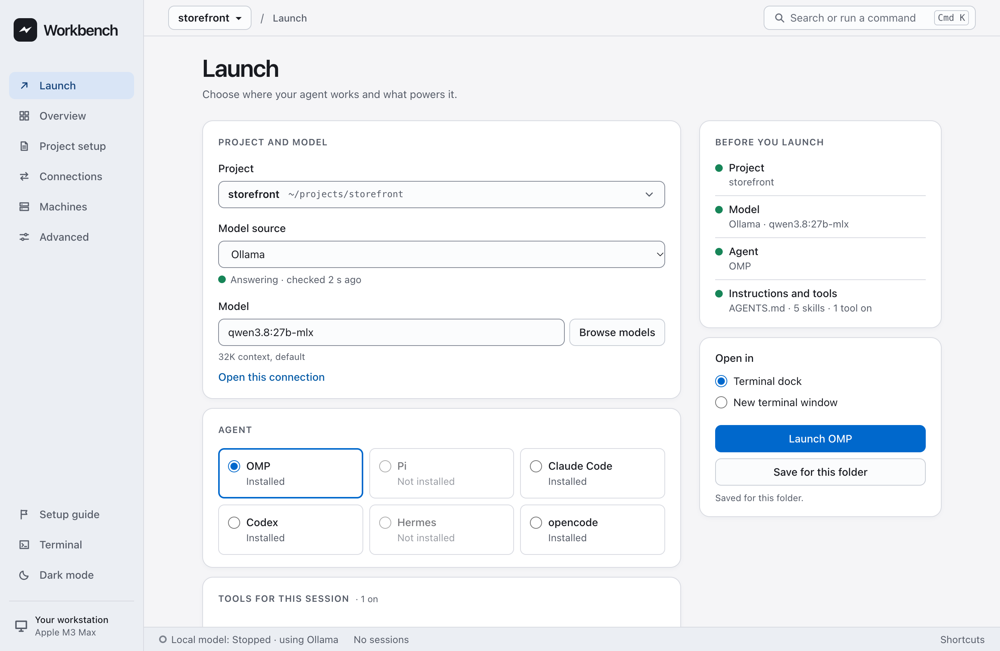
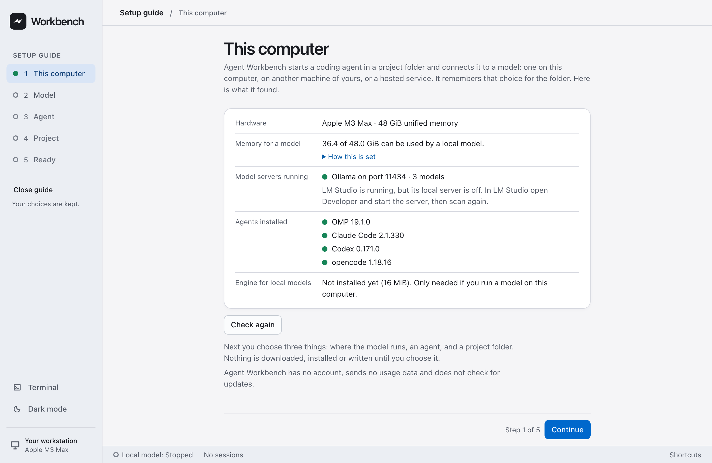
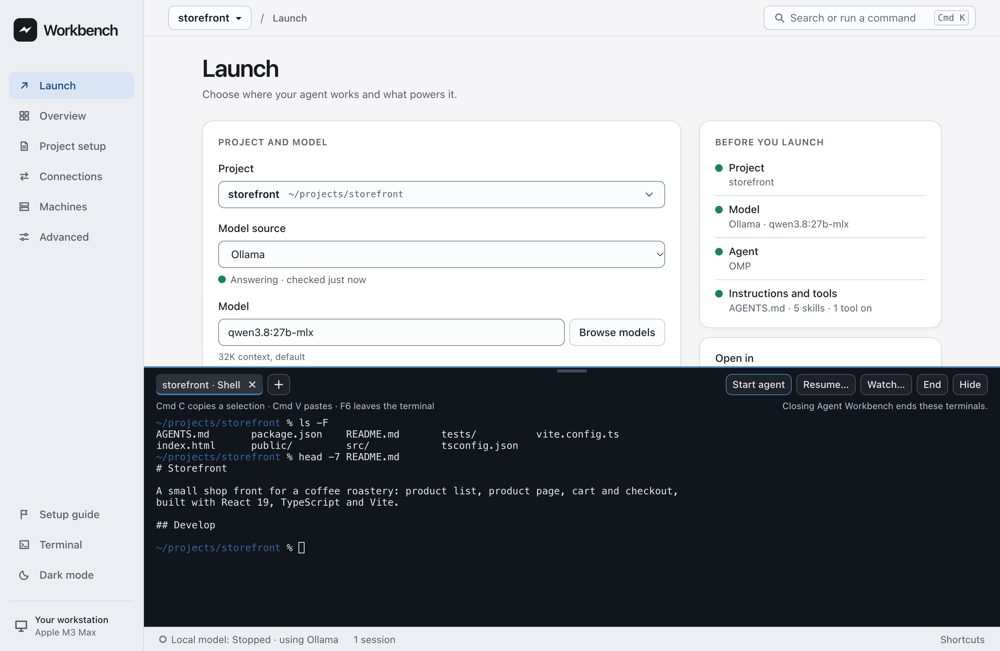
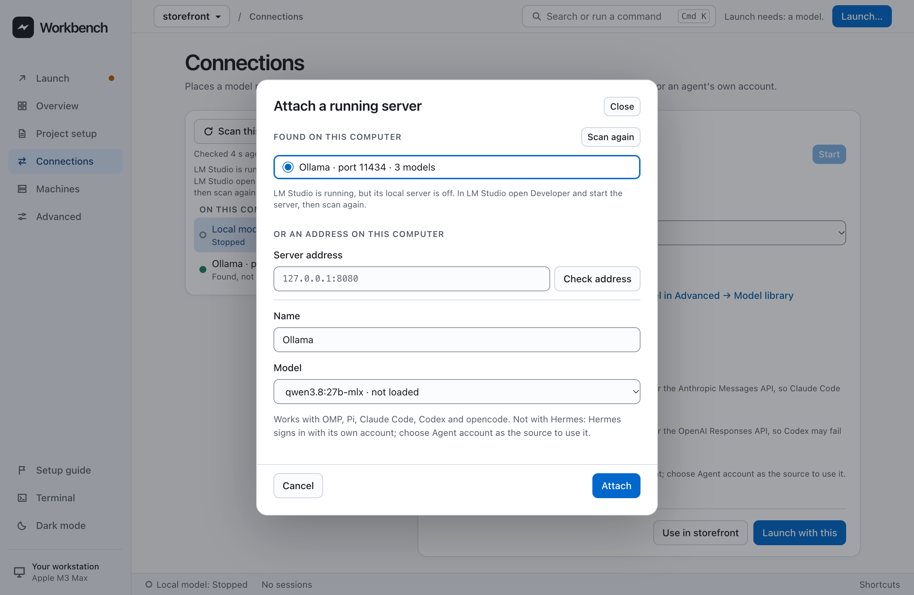
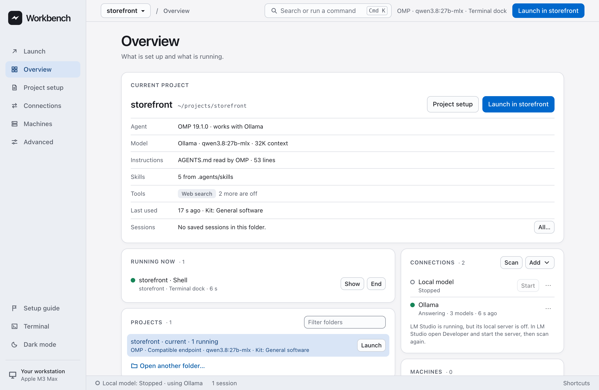

Version 0.4.0 · MIT licence · Windows x64, Linux x64, macOS arm64 (preview)
Pick where your model runs and which coding agent you use, remembered per project folder.
Agent Workbench is a free desktop app. Run the model on this computer, on a GPU box over SSH, in an Ollama, LM Studio or vLLM server you already have, or at a hosted API. Start OMP, Pi, Claude Code, Codex, Hermes or opencode in the folder. Workbench keeps that setup with the folder, together with its instructions, skills and MCP tools.
Getting started Source on GitHub
- No account, no telemetry, no analytics, no background update checks.
- API keys stay in your system's credential vault, never on a command line or in project files.
- Every file it would write into a project is shown first, and only what you confirm is written.
Install
Linux x64
Status for 0.4.0: some checks were run on Linux. The tested-configurations table says which.
curl -fsSL https://github.com/jamesarslan/local-agent-workbench/releases/latest/download/install.sh | shOne click selects the whole command. Then run sh ~/.local/lib/agent-workbench/setup-linux.sh once and start the app with workbench.
Read the script first, or install by hand
Read the script before it runs
curl -fsSLO https://github.com/jamesarslan/local-agent-workbench/releases/latest/download/install.sh
less install.sh
sh install.shBy hand
Download agent-workbench-linux-x64.tar.gz and SHA256SUMS from the
0.4.0 release,
then in the folder that holds them:
sha256sum -c SHA256SUMS --ignore-missing
tar -xzf agent-workbench-linux-x64.tar.gz
sh Agent-Workbench/setup-linux.sh
setup-linux.sh lists the desktop libraries it needs and asks before it uses sudo.
Later, start the app with sh Agent-Workbench/workbench.sh.
macOS on Apple Silicon (preview)
Status for 0.4.0: preview. The macOS checks listed in the README have not all passed. Intel Macs are not supported.
curl -fsSL https://github.com/jamesarslan/local-agent-workbench/releases/latest/download/install.sh | shOne click selects the whole command. The script removes the macOS download mark (quarantine) from the files it unpacks.
Read the script first, or install by hand
Read the script before it runs
curl -fsSLO https://github.com/jamesarslan/local-agent-workbench/releases/latest/download/install.sh
less install.sh
sh install.shBy hand
Download agent-workbench-macos-arm64.tar.gz and SHA256SUMS from the
0.4.0 release,
then in Terminal:
cd ~/Downloads
shasum -a 256 -c SHA256SUMS --ignore-missing
tar -xzf agent-workbench-macos-arm64.tar.gz
sh Agent-Workbench/"Launch Workbench.command"
If macOS blocks the launcher. The kit is not notarised, so macOS refuses
Launch Workbench.command when you double-click it in Finder. Choose Done, then:
- Open System Settings, then Privacy & Security.
- Find the message about
Launch Workbench.commandand choose Open Anyway. - Confirm with your password (Apple's steps).
Starting it from Terminal, as above, avoids this. macOS asks once whether Workbench may control Terminal for agent windows.
Windows x64
Status for 0.4.0: some checks were run on Windows. The tested-configurations table says which.
irm https://github.com/jamesarslan/local-agent-workbench/releases/latest/download/install.ps1 | iexIn PowerShell. One click selects the whole command. It installs under %LOCALAPPDATA%\Agent Workbench and adds a Start menu entry.
Read the script first, or install by hand
Read the script before it runs
irm https://github.com/jamesarslan/local-agent-workbench/releases/latest/download/install.ps1 -OutFile install.ps1
notepad install.ps1
powershell -ExecutionPolicy Bypass -File .\install.ps1By hand
Download agent-workbench-windows-x64.zip and SHA256SUMS from the
0.4.0 release.
In PowerShell, compare the hash with its line in SHA256SUMS, then unblock and extract:
Get-FileHash -Algorithm SHA256 agent-workbench-windows-x64.zip
Unblock-File agent-workbench-windows-x64.zip
Expand-Archive agent-workbench-windows-x64.zip -DestinationPath .Then double-click Launch Workbench.cmd inside Agent-Workbench.
If Windows warns you. "Windows protected your PC": check that the file is
Launch Workbench.cmd from the folder you extracted, then choose More info and Run
anyway. If Smart App Control blocks the unsigned Python in the kit, use
agent-workbench-source.tar.gz with Python 3.12, 3.13 or 3.14 from python.org.
The scripts check the kit against SHA256SUMS, install for your user without sudo or
administrator rights, and add a workbench command. The downloads are not code-signed or
notarised. --uninstall (-Uninstall on Windows) removes the app and keeps
your data.

The idea
One folder, one setup
No more editing four config files to switch. Each project folder keeps its own agent and model source. Open the folder again and the same setup comes back; you can still launch something else in it whenever you like.
- ~/code/shop-api starts Claude Code with A local Qwen model on a GPU box over SSHllama.cpp on the box, reached through one forwarded SSH port
- ~/code/docs-site starts OMP with OpenRoutera hosted API, with the key in your credential vault
- ~/code/game-jam starts Codex with LM Studio or Ollama, already runningattached as a named connection on this computer
Before it offers an agent, Workbench checks that the model source speaks the API that agent needs, and says in one sentence why an agent is switched off.
Three steps
How it works
-

Run the setup guide
On the first start it looks at this computer: memory, model servers already running and the agents you have installed. Nothing is downloaded until you choose it.
-

Choose where the model runs
A server you already run, a model for this computer picked to fit your memory, a hosted API with your key, or a GPU machine over SSH.
-

Launch the agent in your folder
The agent CLI starts in the project folder, in the terminal dock or its own terminal window, with its key in the process environment. The folder remembers the setup.


Workbench sets up, then steps aside. It is not a proxy: prompts and replies go straight between the agent and the model.
Features
What it does
One window for the model, the agent and the folder, and a command line for the same jobs.
Model sources
- This computer. A pinned llama.cpp build for your GPU (CUDA, Vulkan, Metal or CPU), or Strata on NVIDIA, with a recommended model that fits your memory. Downloads are checked against their SHA-256.
- A server you already run. Ollama, LM Studio, vLLM, llama.cpp, Jan and other OpenAI-compatible servers on this computer's own ports. It never scans your network.
- A GPU box over plain SSH. Pair it with your normal SSH login. Workbench finds servers on the box's loopback, or sets up llama.cpp on a Linux box, and forwards one port.
- Hosted APIs. OpenAI, Anthropic, OpenRouter, Google Gemini, Groq, DeepSeek, Together, Fireworks, Mistral, xAI, Cerebras and Hugging Face, or an agent's own sign-in.


Project setup you can read first
- See which instruction files (
AGENTS.md,CLAUDE.mdand others), skills and MCP servers each agent will read in the folder, with a warning where one file shadows another. - Before the first launch in a folder whose own files define MCP servers, hooks or other programs, Workbench asks for consent, and asks again when those files change.
- Every write is a plan first: create, update or skip, with a diff. Only what you confirm is written.
- Eight MIT starter kits give a folder an
AGENTS.md, up to five skills and optional MCP servers.

Terminals and sessions
- Run the agent in the terminal dock, with tabs kept per project folder, or in a terminal window of your system.
- One list shows running terminals, agent windows, remote tmux sessions, the local model and SSH tunnels.
- Recent sessions are read from each agent's own history and can be resumed.
workbench sessionsprints the same in a terminal.


-
The right API for each agent
OMP, Pi and opencode need OpenAI Chat Completions, Codex needs OpenAI Responses and Claude Code needs Anthropic Messages. Workbench checks which APIs a server answers and offers the agents that will work. Hermes starts with its own account.
-
Doctor
One page, or
workbench doctor, checks Python, the data folder, the credential vault, the engine, the GPU driver, the agent CLIs and ports, with one sentence per problem that says what to fix. -
Measure your own setup
Run a short benchmark against the model you serve, and see how many prompt tokens your MCP tools add before a long session. The reference figures are in MEASUREMENTS.md.
-
Claude Code and Codex on local Qwen models
Claude Code sends a system message after the first user turn, and Codex sends developer messages. Several Qwen chat templates in llama.cpp reject both with an HTTP 500 error: "System message must be at the beginning". When Workbench serves a Qwen model, it serves a corrected copy of the template, so both agents can use it. The correction applies only to models Workbench serves.
Templates
Starter kits
A kit is a starting point for one kind of project: an AGENTS.md template, up to five skills
and a few optional MCP servers. Workbench suggests one from the files in your folder and shows every file
it would create. Files you already have are left alone.
General software
Run the real checks after every change, debug one step at a time and keep Git history clean.
Web front end
Run the dev server, check the page in a real browser and keep components consistent.
Python and data
Work inside the project's environment, treat source data as read-only and keep results reproducible.
3D scenes and assets
Inspect before changing, script small repeatable steps and export with checked scale and axes.
Research and writing
Find and cite real sources, draft in passes and check every claim.
DevOps and infrastructure
Plan and read before anything changes, keep secrets out of output and never apply unasked.
Game development
Follow the engine's layout, leave serialised assets to the editor and test from the command line.
Blank
A short
AGENTS.mdwith the headings every agent reads. No skills and no tools.
Kit text is written for Agent Workbench under the MIT licence. Third-party MCP servers are not bundled: a local one is fetched from its package registry the first time an agent starts it, and the kit preview names its publisher and licence. None of the kit servers was started for this release. Kit contents in detail
New in the next release · not in the 0.4.0 download
Run summaries
Each agent Workbench starts in a folder leaves a run record in this computer's data folder: plain JSON, no keys. After the folder's profile or instruction files have changed, the record still says what that run used, so you can copy it into an issue or start from it again.
What a summary holds
- Agent and its version
- Where it started: terminal dock, own window or resumed session
- Model source, connection name and API address (scheme, host and port only)
- Model ID, context size and reasoning effort
- For a local model: engine and weights file, with its SHA-256 when it is in the catalogue
- Profile and starter kit in use
- MCP servers the agent received
- Instruction files, each with its size and SHA-256
- Skills, each with its SHA-256
- The folder prompt, when the agent received it
- Workbench version
What you can do with it
- On the tab of an agent Workbench started, Run summary in the terminal dock opens that run. Project setup → Recent runs lists the folder's newest runs, each with a Summary… button.
- Copy summary copies it as Markdown, ready for an issue or your notes. Copy as JSON copies the full record.
- The summary ends with Changed since this run: the instruction files and skills that changed, are gone or are new in the folder now.
- Save as profile writes the run's choices to
.agent-workbench/profiles.jsonunder a new name. Apply it from Project profiles, after the usual review, to run the task again.
No keys are recorded: no API keys, tokens or environment values, and no user name, password, path or query string from an address. A run keeps the hash of each instruction file, not its text; commit those files and the hash tells you which version ran. Codex and runs on an agent's own account do not receive the folder prompt, so their summaries say "No prompt."
Runs stay on this computer: one JSON file per folder in runs/ in the data folder, with the
newest 100 runs. Agents started on another machine over SSH and from the command line are not recorded.
Run summaries in detail
New in the next release · not in the 0.4.0 download
Settings that travel with the folder
A folder's setup is kept in plain files you can read, diff and commit. Named profiles live in
.agent-workbench/profiles.json inside the project, next to its MCP server list, instructions
and skills. The file holds no keys, addresses or machine paths, so it is safe to commit.
From one machine to the next
- On Launch, Save as folder default writes the current agent, kind of model source, connection name, model, engine settings and tool switches into that file as the folder default. In Project profiles, Make default does the same for a saved profile.
- Commit
.agent-workbench/with the project. The default profile carries the Folder default label in Project profiles. - Open the folder on a machine that has no setup for it yet. Launch says "This folder has saved settings" and offers a Review and apply… button. Nothing changes until you confirm.
- Connections are matched by name and model files by file name. When one is missing, the review says which connection or model file to add. Keys are entered again on each computer.
Where settings live
In the app, Where this folder's settings live in Project profiles lists these for the open folder, each with Show in folder.
| Place | What it holds | Travels with the folder |
|---|---|---|
| The project folder | Named profiles and the folder default (.agent-workbench/profiles.json), the project's MCP servers without secrets (.agent-workbench/project.json), instruction files such as AGENTS.md, and skills in .agents/skills | Yes, safe to commit |
| This computer's data folder | Last choices per folder (projects.json), connections with their addresses but no keys (connections.json), run records (runs/) | No |
| The system credential vault | API keys and values for MCP server variables | No, never written to a file |
Security and privacy
What leaves your computer
Workbench contacts other computers only to download what you ask for (GitHub, PyPI, Hugging Face and the publishers of agent CLIs and kit servers), for the hosted model you chose, and for web tools you switch on.
-
No telemetry, no account
No analytics, no crash reporting and no automatic update check. The desktop window's content policy blocks every network request.
-
Keys stay in your credential vault
Keychain, Credential Manager or a Secret Service vault. A key reaches the agent in its process environment, never its command line, a project file or a log.
-
Checked downloads, per-user install
Kits, engines, Electron and Python packages are checked against pinned SHA-256 values. The install scripts need no sudo or administrator rights.
-
The agents themselves
The agent CLIs are separate programs with their own data handling. A hosted provider receives what the agent sends, including file contents.
Scope
What it is not
Workbench does one job: one project folder, one model source and one agent, set up correctly and remembered. It does not manage git worktrees, run agents in parallel or review diffs.
Use something else when
- You want several agents on one repository, each in its own worktree: Emdash or Claude Squad.
- You want one agent on a model Ollama already serves, and nothing more:
ollama launchdoes it in one command. - You want providers, MCP servers and skills synced across many agent tools for your whole machine: cc-switch.
- You want an app for chatting with local models: LM Studio or Jan. Workbench can attach to either.
Workbench fits when you want to
- keep a different model and agent for each project folder;
- run the model on another machine and reach it over SSH, with no other open port;
- use the same agents with a local engine, an attached server or a hosted key;
- see what an agent will read from a folder before it starts.
Honest status
What was run for 0.4.0
Every entry comes from docs/verification.json, which holds the evidence and notes for each check. A check that is not listed for a system was not run on it.
| System | Passed | Partly working or failed |
|---|---|---|
| macOS 27.2 on a Mac with Apple M3 Max, 48 GB unified memory (preview) |
|
|
| Fedora 44 Workstation, x86_64 with an AMD Radeon RX 9070 series GPU, reached over SSH |
|
|
| Fedora 44 Workstation, x86_64 with AMD Radeon 880M graphics (Wayland desktop) |
|
|
| Windows 11 x64 workstation with an NVIDIA GeForce RTX 5090 |
|
|
Pi, Hermes and hosted CI were not run. macOS stays a preview until its desktop, install, first-start, terminal and Doctor checks pass on Apple Silicon. The tested-configurations table in the README lists them.
FAQ
Questions
What does it cost, and what are you selling?
Nothing. Agent Workbench is free and MIT-licensed. There is no account, no paid tier, no sponsor placement and no resold API access. If you use a hosted model, you pay that provider directly with your own key.
Does it keep per-folder config in plain files?
Yes. What should move with a project is in the project folder:
.agent-workbench/profiles.json holds named profiles (the agent, the kind of model source,
the model, engine settings, tool switches, a prompt, the connection's name and the model file's name),
.agent-workbench/project.json the MCP servers, next to your instruction files and skills. These
are plain text files, and Workbench writes no keys, addresses or machine paths into them, so commit
them and clone the project on the next machine. There you add the connection under the same name with its key, and the model file;
applying the profile tells you which are missing. Last choices, connections and run records stay in
this computer's data folder, also plain JSON, and keys stay in the credential vault. Profiles and
Save profile are in 0.4.0. New in the next release: a folder default, which a
machine that has not opened the folder yet offers with a Review and apply… button.
Can I rerun an old task after the folder's setup has changed?
New in the next release. Every agent the app starts in a folder on this computer leaves a run summary: the agent and its version, the model source, connection name and model, the instruction files with their SHA-256, the skills, the MCP servers and the folder prompt if the agent received it. Copy summary copies it as Markdown and Copy as JSON as data. Its last part lists the instruction files and skills that changed since. Save as profile turns the run's choices back into a profile you review and apply. A run keeps file hashes, not file contents, so the old instruction text comes from your Git history. No keys are recorded.
I already use Ollama or LM Studio. What does this add?
If Claude Code, Codex or opencode on one Ollama model is all you need, ollama launch is
the shorter way and you should use it. Workbench attaches to the server you already run and adds a
setup per folder: which agent, which instructions, skills and MCP tools, and a check that the server
speaks the API that agent needs. It can also point the same agents at a GPU machine over SSH or at a
hosted key.
Do I need a GPU?
No. You can use a hosted API or a model server on another machine. For local models, Workbench installs the llama.cpp build that matches your hardware (CUDA for NVIDIA, Vulkan for AMD and Intel, Metal on Apple Silicon, CPU otherwise) and suggests a model that fits your memory. Without a GPU it uses the CPU build, which is much slower.
Which agents can it start, and with which models?
OMP, Pi, Claude Code, Codex, Hermes and opencode. Each needs a server that speaks its API: OMP, Pi and opencode use OpenAI Chat Completions, Codex uses OpenAI Responses and Claude Code uses Anthropic Messages. Workbench checks the server, switches off the agents that would not work and says why. Hermes starts with its own account sign-in. For 0.4.0, OMP, opencode, Codex and Claude Code each completed a small file-writing task against a model Workbench served on a Mac; Pi and Hermes were not run.
The download is not signed. How do I know it is the real one?
The 0.4.0 kits are not code-signed or notarised; this is a one-person project without signing
certificates. Every release lists SHA-256 checksums in SHA256SUMS, and the install steps
check them. A checksum shows that the download is intact, not who made it. The install scripts and
launchers are plain shell, PowerShell and batch scripts that you can read before you run them, and you
can build the kit from the source yourself.
What does "preview" mean for macOS?
Workbench is built for Apple Silicon and uses llama.cpp with Metal. On a Mac, the engine, the local model and four agents were run from the command line, but the macOS checks listed in the README have not all passed for this release. Strata and vLLM do not run on macOS, and Intel Macs are not supported. Expect rough edges and please report them.
Where do my keys and data live?
Hosted API keys are in the system credential vault. Settings, logs, downloaded models and the local server's key are in Workbench's data folder, and a few files are written where the agent CLIs expect them. The security and data guide lists each location and how to remove it.
Why Electron?
One interface for three systems, and a real terminal inside the window. The page that draws the interface runs sandboxed, and its content policy blocks network requests and remote code. There is also a command line for starting agents and for the Doctor checks.
Where are the benchmark numbers?
Not on this page. Speed and quality depend on your hardware, the model file and the settings, so a headline number would mislead. MEASUREMENTS.md has what was measured, on which machine, with the result files and the limits of each run. Workbench can run the same short benchmark on your own setup.
Does it run several agents in parallel or manage git worktrees?
No. It lists the sessions that are running and can resume recent ones, but it does not create worktrees, review diffs or coordinate agents. Emdash and Claude Squad are built for that.
How do I remove it?
Run the install script again with --uninstall (-Uninstall on Windows). It
removes the app and the workbench command and keeps your data folder. A kit you unpacked
by hand is removed by deleting its folder, which also deletes its data in .local. Keys in
the credential vault stay until you delete them. The
troubleshooting guide
lists every location, including what Workbench created for the agent CLIs.
Something does not work. Where do I start?
Open Doctor in the app, or run workbench doctor in a terminal. Each check gives one
sentence that says what to fix, and the
troubleshooting guide
has a section for each check.